À propos
Étudiante ingénieure en IA à ESPRIT, en double diplôme à IMT Mines Albi. Je recherche un stage de 4 mois dès avril 2027 en tant qu'ingénieure IA, afin de contribuer au développement de solutions basées sur le machine learning et l'analyse de données.
Expérience
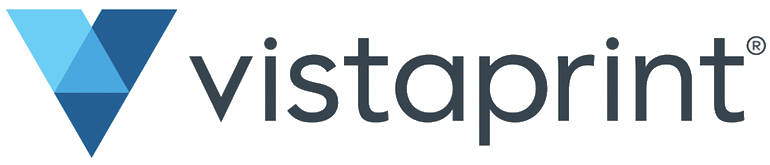
Stagiaire en ingénierie de l'IA, VistaPrint (Cimpress)
- Développer StockIT, une application mobile d'inventaire informatique basée sur la vision par ordinateur, l'OCR et les LLM, afin d'automatiser l'inventaire.
- Fine-tuner YOLO11s : mAP50 de 0,867 et inférence en 9,9 ms, afin de détecter le matériel.
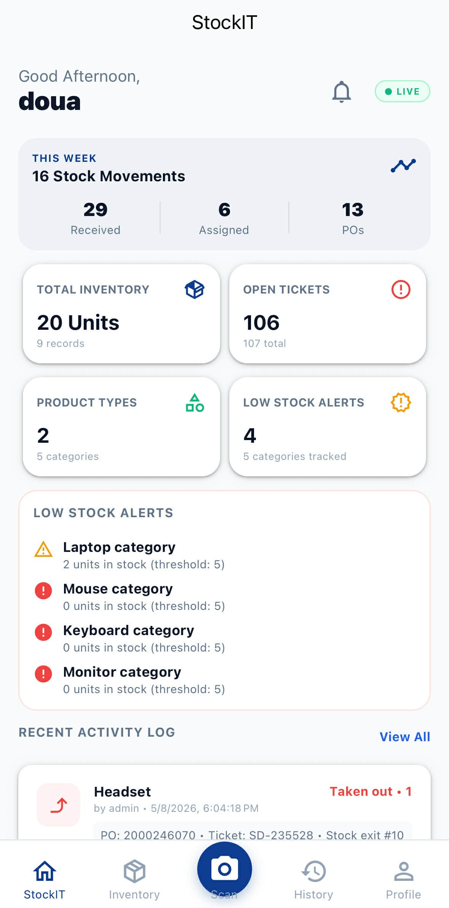
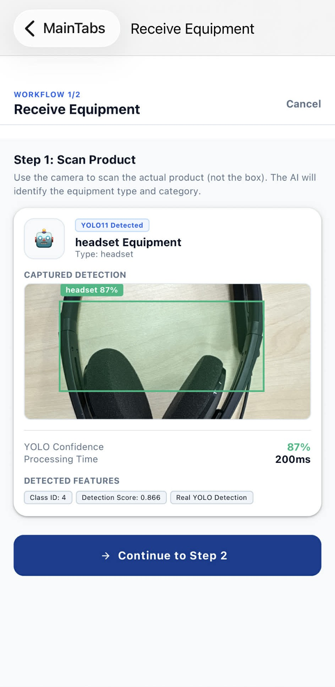
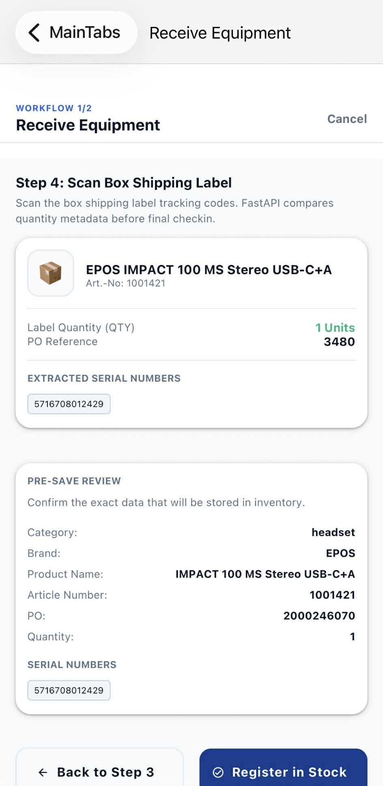
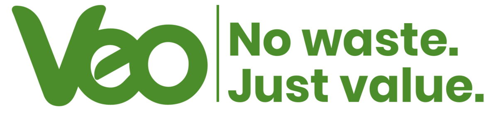
Stagiaire en ingénierie de l'IA, Veo Worldwide Services
- Concevoir un système multi-agents d'IA pour évaluer et classer les candidats au sein d'une plateforme full-stack, afin d'accélérer le recrutement.
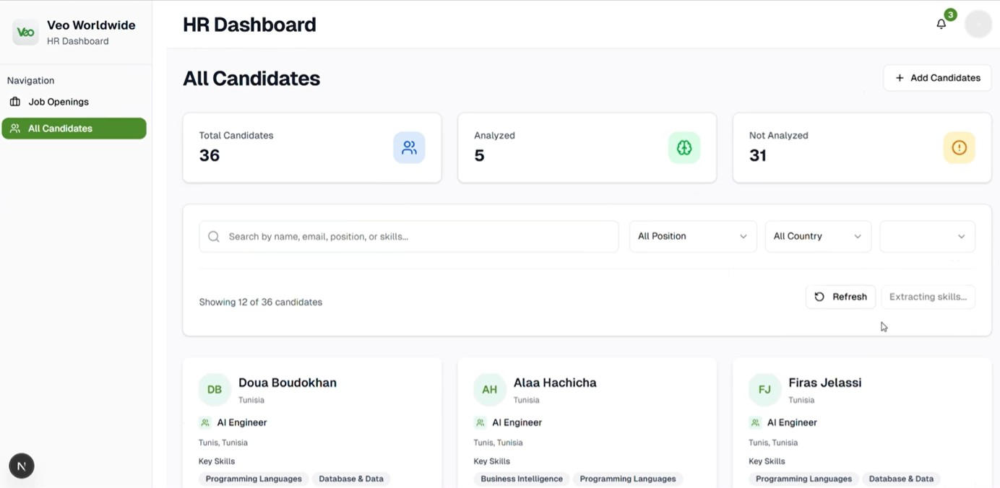


Stagiaire en design graphique et impression numérique, BUROGRAPH
- Concevoir du matériel marketing avec Adobe Creative Suite, en appliquant les principes du design thinking.
Projets académiques
CYREN, agent IA de décision et de risque
- Développer un agent de décision combinant raisonnement par LLM, règles déterministes et enrichissement contextuel via MCP
- Afin d'aider à décider face aux risques.
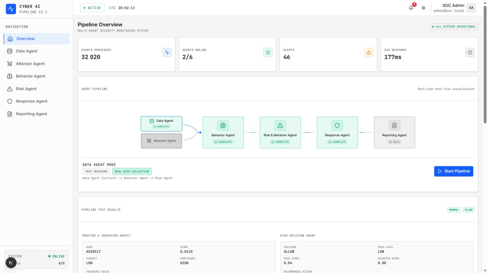


Reconnaissance de la démarche humaine
- Développer un système de reconnaissance à partir de silhouettes vidéo (97,4 % en segmentation et 96,3 % en reconnaissance)
- Afin d'identifier des personnes.
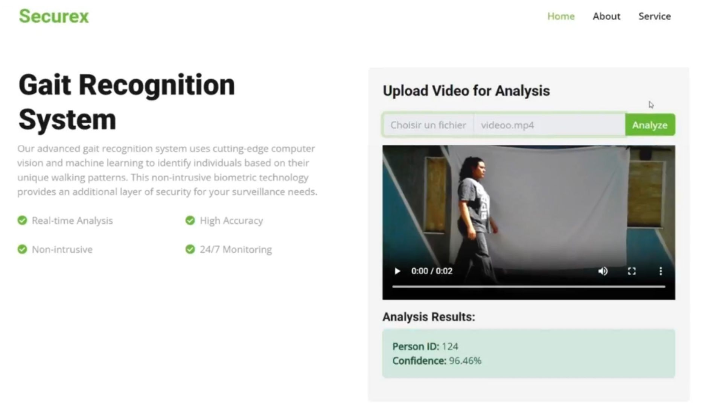


Pipeline d'alignement de protéines
- Réaliser l'alignement de protéines par embeddings ESM-2 et Smith-Waterman, avec analyse multicritère assistée par LLM
- Afin de comparer des séquences.


Projet Data Engineering et ML
- Concevoir un pipeline ETL, un entrepôt de données et des tableaux de bord Power BI
- Développer des modèles de ML appliqués à la santé (F1 : 0,99 ; R² : 0,99).


Réalisations
1re place
Bal des Projets, Compétition Incubateur ESPRIT
- CYREN : plateforme multi-agents IA pour la détection d'anomalies et la réponse cyber automatisée.
- Lauréat Orange FAB, sélectionné au programme Prélabel Startup Act (APII).
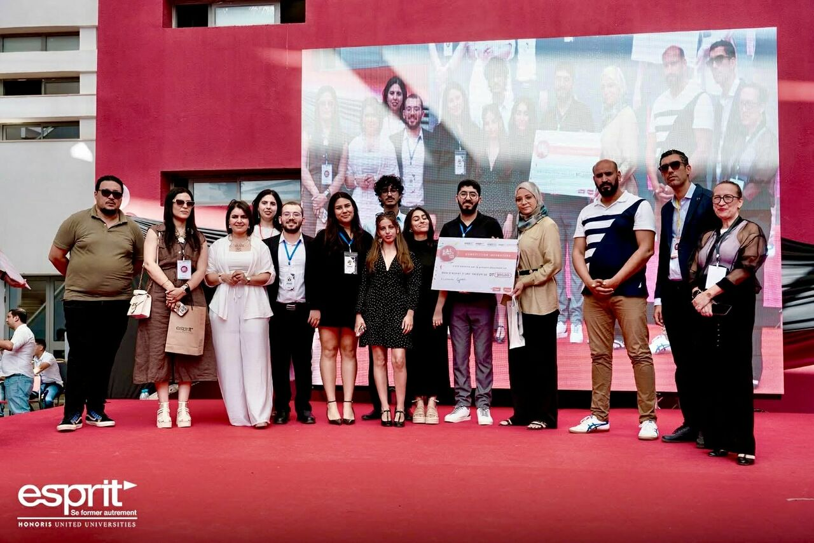
2e place
Hackathon Smart Insurance avec IA
- Assurance auto basée sur l'IA, pour réduire la fraude et accélérer le traitement des sinistres.
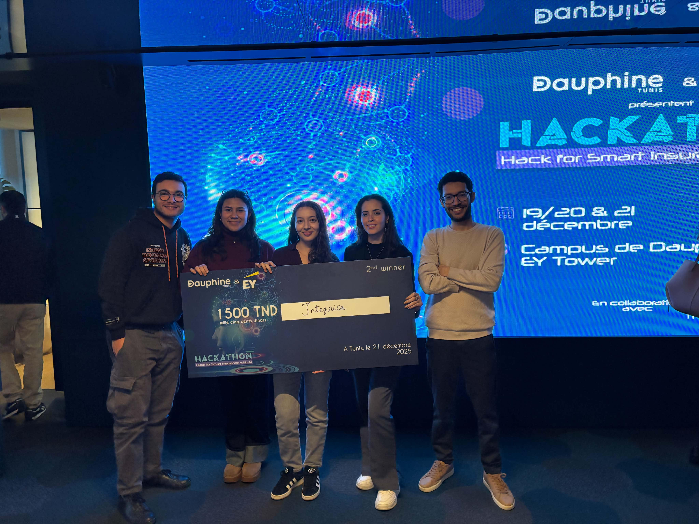
1re place
AI Camera Challenge, GAICA (Global AI Congress Africa)
- Solution de sécurité intelligente intégrant la détection et la reconnaissance de plaques d'immatriculation.
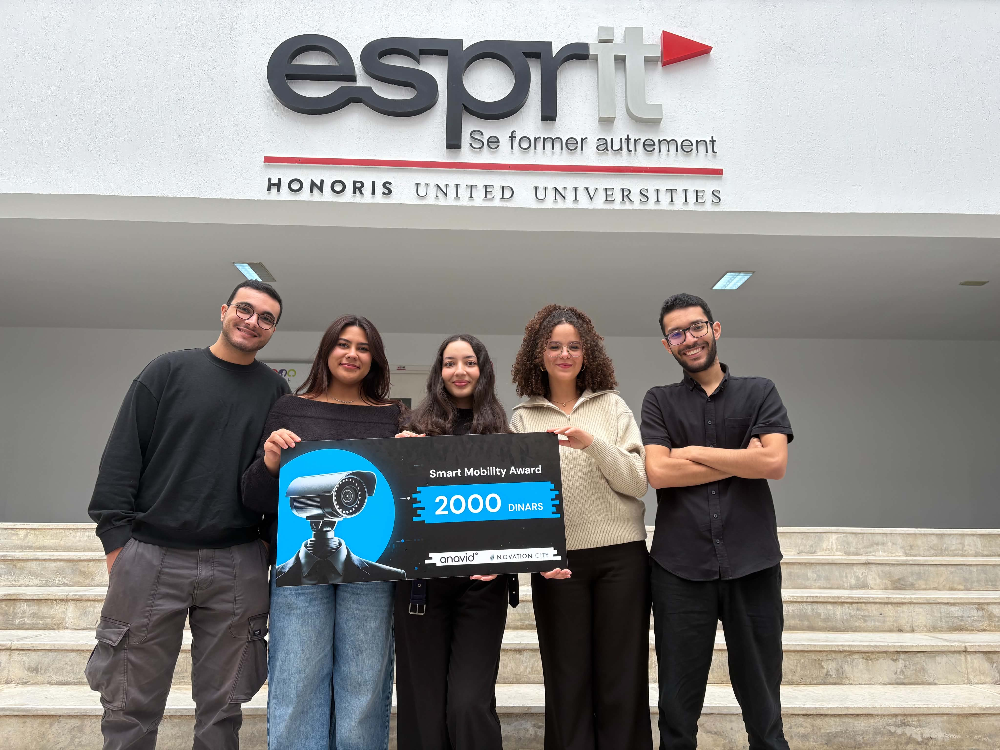
1re place
Hackathon « From Idea to Startup »
- AivyLearn : plateforme d'IA pour l'apprentissage personnalisé.
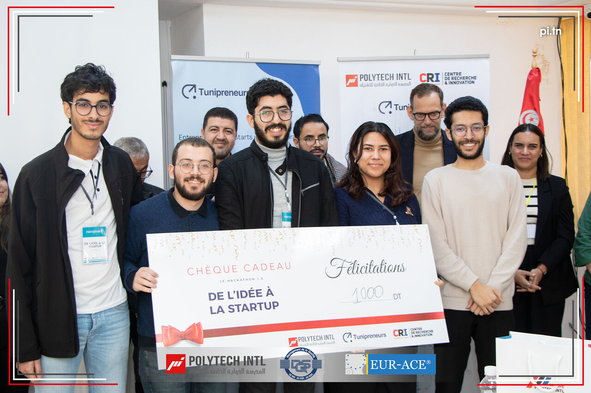
2e place
Hackathon TuniHack 10.0
- Plateforme éducative inclusive avec simulations 3D.
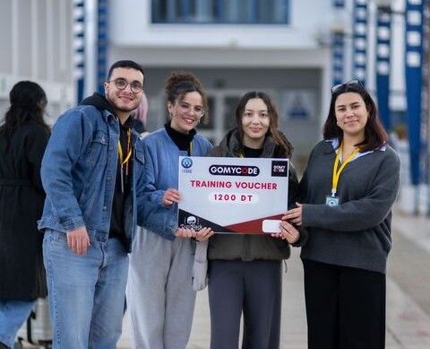
3e place
Compétences
- Langages
- Python, C++, Java, JavaScript, C
- IA et machine learning
- PyTorch, TensorFlow, Keras, Scikit-learn, OpenCV, YOLO, NumPy, CNN, U-Net
- LLM et agents
- Llama, CrewAI, LangGraph, MCP, A2A, Azure CV, ESM-2, Biopython
- Développement
- FastAPI, Next.js, React Native, Django, Flask
- Données
- PostgreSQL, MySQL, SQLite, Oracle, MongoDB, Neo4j, Supabase
- Outils
- Git, Docker, Power BI, SSIS, SSMS, Arduino, Adobe Creative Suite
- Méthodes
- Apprentissage automatique et profond, vision par ordinateur, ingénierie des données, Agile/Scrum
- Transversales
- Résolution de problèmes, travail en équipe, adaptabilité
Certifications NVIDIA
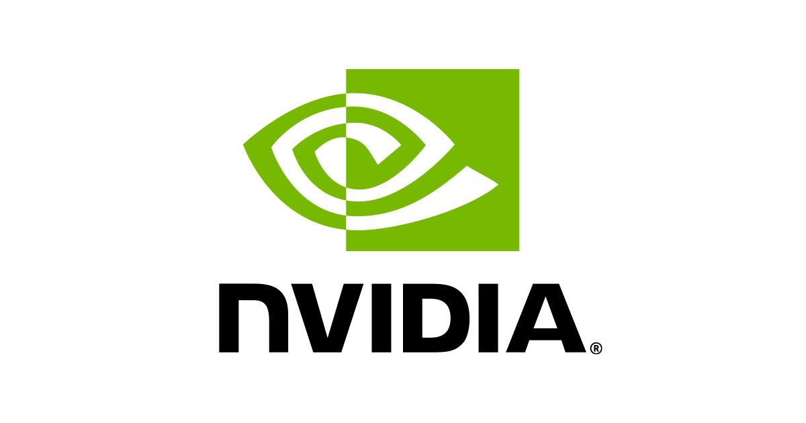
Formation
Double diplôme en ingénierie des données
Cycle préparatoire intégré + ingénierie en intelligence artificielle
Baccalauréat en mathématiques
Vie associative
- DeepFlow (Sept. 2024 – Mai 2026) : workshops de deep learning.
- IEEE RAS Chapter (Sept. 2023 – Sept. 2024) : compétitions de robotique.
Langues et loisirs
- Arabe (langue maternelle), français (B2), anglais (B2).
- Musculation, peinture.